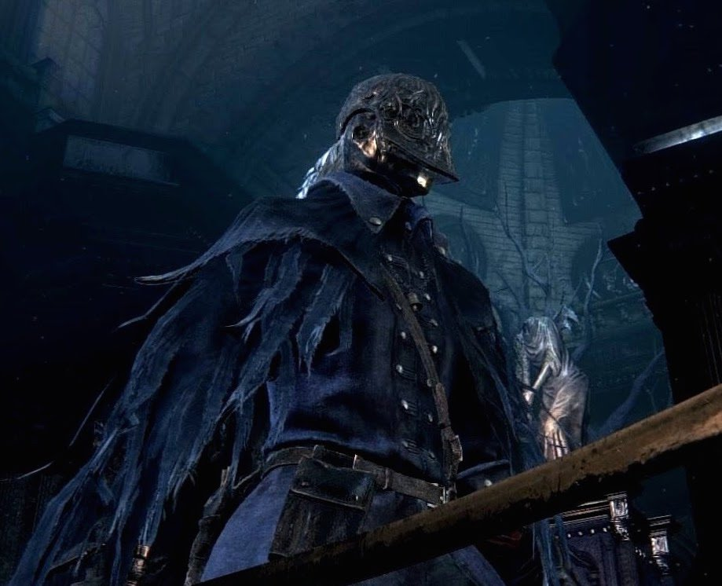

The Bloody Crow of Cainhurst is an enemy hunter in Bloodborne, and is the last enemy to be faced as part of Eileen the Crow's questline. 
Description
The Bloody Crow of Cainhurst is a hunter who has presumably gone mad with bloodlust, and as a result became a target of Eileen the Crow. However, in her old age, she proved to be no match for him in combat, as the player finds her in a pool of her own blood, barely alive on the steps leading up to the entrance of the Grand Cathedral.
He is outfitted with the Cainhurst Set with the exception of his chest piece, which is the Crowfeather Garb. His weapons are the Chikage and the Repeating Pistol.
Location
Once the player has defeated Rom, this character can be found at the Grand Cathedral if you helped Eileen defeat Henryk earlier at the Tomb of Oedon, and she survived.
- Can this NPC be an ally?: No
- Can this NPC be an enemy?: Yes
- Drops: If killed, he will give 6,238 blood echoes and the +3 Blood Rapture rune. If the player already has this rune they will be given a Great One's Wisdom.
Strategy
Standard Strategy
This battle is very difficult to take on solo, as he is capable of dealing massive damage up close, as well as from distance, and has quite a substantial pool of health (~4160, needs confirmation). He makes frequent use of the Hunter's Bone, and will also begin throwing Numbing Mist at you in the later stages of the battle. He is also able to heal by using one blood vial (more common) or two (rarer), which he will usually do when he drops between 30%-50% health.
He begins the battle one-handing the Chikage, and will switch between this and the transformed Chikage, which deals poison damage to him as long as he has it in trick mode. It appears as though he avoids transforming and taking poison damage after he has used his blood vial and his health drops around the 30% mark (Can confirm, at 30% or lower he does NOT use Chikage's trick form, he will proceed to attack in a more defensive manner).
As long as he has the repeating pistol out, you must be ready to dodge because it deals tons of damage. He tends to fire following a quickstep, so it is a good idea to quickstep yourself immediately after you see him quickstep just in case he follows it up with a shot. Also, attempting to stunlock him can prompt him to fire in retaliation if he is able to get a shot off between your attacks, which will likely parry you. In one of the few examples of its usefulness, the Wooden Shield may be used to mitigate much of the damage he can do if he connects with his pistol, but well timed/directed dodges should be enough, and putting on armor with high Blood defence (eg. White Church set) before this battle is worth consideration.
He will come at you with a variety of moves in the Chikage moveset, switching between two-handed and one handed forms, and using the Hunter's Bone to quickly close the distance on you, so you must remain equally mobile. Every now and then he will wind up with a heavy attack, sometimes fully charged, sometimes not, but baiting out these attacks will allow you to either attempt to parry, or swoop in for a quick strike or two. However, he will punish you for getting greedy with trying to stunlock him, or attempting to jump attack from distance, as he will quickly deliver strikes with his Chikage if you run out of stamina, or are left vulnerable following the jump attack.
Due to the hazard he poses at close range, employing weapons with a decent amount of reach such as the Transformed Hunters Axe or Threaded Cane can provide an extra layer of safety as you can land hits from distance and slowly whittle him down. Poison knives, if timed right, can also deal damage for you if you are able to connect with three of them.
Although a straight-on fight with him is possible, you can give yourself an advantage by luring him into the stairwell. This limits his angle of attack to directly in front of you if you maintain medium range, and also allows you to quickly dart out of the Cathedral to heal up from safety, or even swap out weapons/equipment if you need to.
One particular method involves exploiting his approach patterns with well timed charged R2 attacks of long-reach weapons, such as the transformed Hunter's Axe, or Ludwig's Holy Blade. Based on whether he is running, or walking towards you, charge up your attack so that he basically walks right into it as he prepares to attack you. However, this obviously will leave you open for punishment if mistimed.
In addition, he may dash through the attack if the Hunter's Bone is active, and as a result, the Hunter's Axe double spin gives you an added layer of security, since the second spin will connect if he dashes through the first. An added benefit to using this strategy is that the second spin will knock him to the ground, allowing you some time to recover, heal or charge up another R2 attack.
Whatever strategy you choose to employ, you will want to be well stocked on vials, and be patient no matter how low his health is, because one moment of recklessness can mean your death due to the insane amount of damage he can dish out.
Ranged Strategy
Alternatively, you can cheese him by using a combination of Poison Knife and Numbing Mist, as he can be poisoned with three knives. You may also blast him with Cannon if you have 4 Bone Marrow Ashes and having all three Formless Oedon Runes equiped. For Arcane users, either Tiny Tonitrus or Executioner's Glove would serve the same purpose. This is especially useful as he gets low on health and stops tricking the Chikage, and Tiny Tonitrus can effectively be used up to 29 times with all the Formless Oedons equipped thanks to blood bullets.
If none of the previous strategies of cheesing this jerk to death appeal to you, you can try a stunlock strategy centered around Beast Roar. Equip Beast Roar and a fast-attacking weapon such as the untransformed cane or one of the silver swords. This will only work if you lure him into a corner. The best place to do this is right near the doors to the cathedral: The half-opened door and the wall form a little triangular funnel that is perfect for keeping him in place. Induce him to follow you as far down the stairs as you can before he starts moonwalking back up. He probably won't move all the way to the doors so once he is as close as you can get him, run around behind him so you're facing the doors and use Beast Roar to knock him back and down. Ideally, you'll be able to use a couple Beast Roars to push him into the three-sided corner formed by the wall and one of the cathedral doors. Once he's stuck in that corner, get in close and hit him with quick-striking light attacks over and over until your stamina is nearly depleted. Then, use Beast Roar to knock him down. Make sure the movement caused by your attacks don't put you behind him or to the side, or the Beast Roar will knock him free from the corner of death. If you position yourself right, you can get off at least 4-5 attacks depending on your stamina, Roar him to the ground (he won't have anywhere to be blown backwards to, so you can keep attacking him as he stands up) and repeat until he's dead. To make sure you have enough bullets to keep this strategy up until he's dead, bring the Formless Oedon rune.
Beast Roar can also be used to push him out of the Cathedral doors. The player can then stand in the entrance, blocking his path as he attempts to move back inside. At this point he is completely vulnerable to attacks and will not fight back or heal. If he gets back inside, chances are you won't have enough bullets left to repeat this strategy so care should be taken to keep him outside.
Patience Strategy
Even though you can kill this overpowered NPC character with ranged attacks you can also, if you are willing, kill him by taking your time. The newest patch prevents you from cheesing him by abusing his Chikage poison damage so you need to choose other options, unless you are overleveled. This strategy consists of keeping away from the NPC, attacking sparingly and letting the NPC whittle away his HP each time he uses the Chikage transformation. Quickstep is important, keep strafing and be careful of his gunshots. The NPC will use his Chikage transformation from time to time and whittle away his HP. Parry him when you can and use a visceral attack to punish him. Do not get greedy and try to hurt him since he will more than likely parry you and one shot you with a visceral attack.
Take care to avoid his Numbing Mist when he starts using them because you will need to, inevitably, heal. He will, as said before in the page, use a Blood Vial once, but do not despair. Tolerate this and keep using this strategy. As said before, quickstep and strafe, quickstep when he does or you will most likely get shot and take tremendous amounts of damage. The Chikage poison damage will do the work for you. Attack from time to time. There is no need to take the fight to the Boss when he will do the work for you. It should not be said but Blood Vials are a must here. To use this strategy strafe around the room, take your time, let the Boss hurt himself and do not get impatient or he will punish you. Try to bait the Boss to use the transformation, this is the trick to the strategy.
Patience Strategy Addendum
It's possible to cheese him in an alternative way. First, draw him out to the cathedral entrance. Due to his program he will continue to walk towards you despite the fact that he can't cross the threshold of the Cathedral entrance. Now, look to either side of the entrance at the statues of the Amygdala and notice the line of stones that extend from right in fron of the statues. Using a long weapon (rifle spear for my playthrough) it is possible to R2 attack him from safety without him being able to hit or shoot you, provided you backstep away after each attack and maintain his view so that his gunshot would hit the wall in front of him. You will be unable to lock on, so a trial-and-error of hitting him is required. It's possible to use the monocular to aid with aiming. It is also possible to get him stuck in the hinges of the doors or on the statues in the stairway inside the cathedral, but he is unlikely to maintain this stuck position for very long.
The room is enormous. Use this. Strafe and quickstep. Keep away from the Boss. The poison damage will eventually kill him or give you the opportunity to kill him yourself. This will take time so do not expect to kill him quickly.
Simon's bowblade strategy
Another simple strategy requires the use of Simon's bowblade. If the player has acquired the bow by the time the fight occurs, an easy cheese strategy can be achieved. Simply kite him towards the cathedral steps and go far enough down that he has to retreat back to the inner parts of the cathedral. While retreating up the steps, shoot at him with the bow.
Doorjam Aggro
If you can draw the Hunter down the stairs and through the main doors, he will still attack up until the absolute edge of the Cathedral building. But physically cannot step out. By moving just to the left of the door, he can become "wedged" in the small triangle of space between the door and the edge of the foundation. Using a weapon such as the Threaded Cane, you can safely continue to hit him and draw his attention, while keeping the thick door of the Cathedral and the Pillar on it's left between the two of you. If he retreats inside, fire a bullet, or strike with the Cane to clip him through the door and cause him to charge again. This strategy is incredibly cheap, but nearly 100% safe once you reach the door, you can stay to the left, and continue an almost constant barrage of attacks, while being shielded from his counters and bullets.
The Poison Knives Strategy
This requires the least amount of skill, all you really need is 20 poison knives. Lure the hunter past the midpoint of the stairs, then wait for him to begin his retreat. NOTE: If he transforms the chikage, this makes it much faster. Upon his retreat he dodges much less. Use three poison knives to poison him, and wait. He appers to only have one blood vial, so you can let him use it or throw some numbing mist to stop his healing, but the numbing mist will likely wear of if you use this method of cheesing him right away. Otherwise, let him heal and re-poison him again. You will clearly need to poison him more than once due to his ludicrously massive health pool, so keep poisoning him, use the stairs and just wait.
Most non-invasive way of cheesing him
(note: this method takes 10-15 min and decent timing is required but I assure you this is one of the more tactical ways of fighting him)
Prerequisites:
1. 10 molotovs (to use near end of fight)
2. 10 oil urns (to use near end of fight)
3. 10 throwing knives (to use near end of fight)
4. 20 blood vials
5. note in phase 2 (depending how accurate your attacks are but bring extra items (not pebbles) like pistol ammo (20 bullets) and a pistol/gun with decent damage to finish him at a range.)
know that you should not engage him using this method will also make it less likely he will use pistol attacks
How to fight him:
Phase 1
1st. Begin by entering by entering the cathedral then walk up to him then back away and be ready to dash back. When you hit the stairs after backing up he usually starts using the hunters bone (to evade his quick lunges when he has hunters bone active keep in his aggro (notice range) range but at a distance).
2nd. keep moving towards him then going back and forward up and down the stairs (if necessary outside the cathedral and then continue step) with him coming towards you and you stepping back when he tries to move forward. (note he has unlimited use of the hunters bone and roughly over 3000 health) your goal is to get close enough to make him switch his blade to extension mode (this mode causes him to lose health but gain damage) once he does keep on your toes by moving back as often and as quick as possible.
3rd. when he get to 1/3 or 1/2 of his health he will use blood vile once to heal then preceded with the same method till he gets back to 1/3 then precede to next phase. on the off but extremely rare chance he uses a second blood vile repeat this step and use caution.
This phase should take approximately 10 minutes.
Phase 2
When he is at 1/3 he goes into a unusual protection mode so he wont be using his sword extension mode anymore. At this point use the knives to damage him then use the Molotov`s. This should assuming you hit him with 2/3`s of all the per-requisite items kill him. otherwise if you missed some hits use the rest then your pistol and if absolutely necessary your main weapon to deal final or final 2 attacks to finish him. Please note that using the Executioner Gloves on him from outside the Church will kill Eileen too. This is especially galling if you got him down to 1 hit and you end up killing Eileen anyway.
Assuming you did this correctly you wouldn't have to actually engage him and the only damage you might take is his pistol shots (they're pretty damaging).
(note: depending how accurate your attacks are but bring extra items (not pebbles) like pistol ammo and a pistol/gun with decent damage to finish him. )
Blue Elixir Strategy
Right away as you pull him, kite him down the stairs. After he's on the stairs, dodge past him, and run to the end of the cathedral, behind where he spawns. Run to one of the two corners and use a Blue Elixir.
At this point he should lose aggro, and go back to his normal position, where he'll now stand with his back turned against you, facing towards the entrance like he does when you start the encounter.
All you have to do now is to sneak up behind him, use a charged R2 attack, and follow it up with a visceral. A backstab sequence if you will.
This strat does depend on two things however.
1. You gotta make sure he isn't running after you, but walking, when you're running to the back end of the cathedral. Every once in a while he'll run towards you to attack, but he usually just walks,
which is what will allow you to make him lose aggro.
2. You gotta have quite a few Blue Elixirs, and a hard hitting weapon, which you might not have yet, depending on how much of the game you've completed at this point.
If you find yourself with only 3-4 Blue Elixirs, I'd recommend having him slowly kill himself with his' blade's trick mode, and using this strategy to kill of the remaining health after he stops damaging himself entirely.
Hide and Backstab Strategy
Almost identical to the method above but without the need for the Blue Elixirs:
- Lure the Bloody Crow down the stairs, then run past him right to the back of the Grand Cathedral past the lamp and hide yourself behind one of the wall outcrops/pillars closest to the Cathedral altar. The Bloody Crow will de-aggro and walk back to his starting position.
- When the Bloody Crow has returned to his starting position and turned his back to the lamp, walk up behind him and backstab for a visceral.
- Have The Bloody Crow chase you to the stairs and repeat the method until dead. Recommended to equip as many Clawmark runes as possible to speed up the process
(Credit for this method to an anonymous user in comments section).
Slow Down Strategy
A strategy that I have found works for beating this monster of an enemy is to lure him to the stairs of the cathedral entrance (near Eileen).From here he will slow down, which you can bait him into Switching to Chikage's trick form, in his slow walking state this will hurt him very quickly.He may start de-aggro'ing and move towards his default position.You can throw projectiles at him( such as pebbles or molotovs) or approach him to lure him back towards the stairs.This next part is VERY important for cheesing him: His slow movement speed will make knocking him down for a visceral very easy. Preferably with a blunderbuss type weapon, as long as your using blood rupture (+200 hp) and runes that up visceral attack, this will speed up the process.Be warned that he occasionally uses his pistol, which can kill you point blank and you'll have to restart.My first successful attempt at beating him was this strat.
Media
(( Please respect these video posting guidelines))
-  Mhazard-
Mhazard-
Other Notes:
- The wooden shield or loch shield will effectively trivialize his repeating pistol shots, and can be useful to a smaller extent against his chikage. The shields will reduce his damage from gunfire to mere chip damage, barely anything at all, and will reduce his chikage damage by a good portion, although you'd be best served by simply dodging against melee attacks. When a gunshot connects against a shield, stamina loss is minimal, and the player recovers very quickly. It was very useful in my fight with him in NG+. Against his chikage, the player will recieve somewhere between half and two thirds standard damage, and will drain stamina fairly quickly, which is a big problem, considering he'll just swing at you again and again and overwhelm your shield. It's best to dodge or keep your distance against melee attacks.
- If you kill Rom before helping Eileen defeat Henryk, you will not be able to have this encounter. Instead, Eileen will turn against you at the Cathedral.
- It was once possible to cheese him by exploiting a pathfinding glitch which caused him to get stuck behind the cathedral doors, leaving him vulnerable to attacks "through" the door with weapons like the transformed Threaded Cane. This was patched out as of version 1.04 however, so more legitimate approaches are necessary.
- He can still be cheesed after 1.04 with a bit of luck. If he tricks Chikage and the player sprints out of the Cathedral, he will sometimes lose interest and forget to transform Chikage back, resulting in his eventual death thanks to the Chikage's self-damage.
- Pathfinding isn't fixed as of 29/11-2015, managed to get him stuck on one of the side ledges going down the staircase towards the doors, his AI wasn't capable of walking him back off, so he ended just standing there staring.
- Since he wears the crowfeather garb, it is possible that he either was a Hunter of Hunters and joined the Vilebloods, or killed one and took their garb. Regardless, he is hostile to all, so runes do not make a difference.
 Anonymous
Anonymousthis dude has a ridiculous amount of health, won’t hesitate to snap you out of existence with his chikage, spent most of his blood echoes on bloodtinge, and has an annoying trigger finger like gascoigne.
and yet i still love this game.
- Anonymous
Got him second try in my Noble Scion playthrough. Parried his ass to hell till he had such little health left, he died to his own chickage.
- Anonymous
Stand still and he'll walk onto the transformed rifle spear charged R2, or if he's running then just an R2. Doesn't use his pistol much if you stay reasonably close.
- Anonymous
I used the spin to win tactic with the hunter's axe because I didn't want to cheese the fight. I came close to using one of the cheeses though. It took a while for it to sink in, but I only attacked him when he put the gun away in the first half of the fight. It got tricky toward the end since he stops putting the gun away, so then it just became a game of patience. I upgraded the hunter's axe to +6 (I think) just for this fight for the charged R2 attacks in the extended form. I've barely used that weapon before or since, but it was great for the fight. I think I'll use the beast cutter the next time since this guy doesn't know what to do with DLC weapons.
- Anonymous
- Anonymous
Took me three tries this time, but I still despise this "character." He's literally a nobody and yet, for some bizarre reason, by far the strongest hunter in the game apart from Gehrman and Maria. I wouldn't even mind if you fought Eileen and she were this strong, like when you don't defeat Henryk before the Blood Moon happens. At least that would have some impact and logic behind it, but this guy is just boring as hell.
- Anonymous
Cheesed his ass by luring him down the stairs with Ludwig's holy blade transformed. When he loses interest and starts walking backwards, do a Jumping attack, then he'll slowly walk towards you, while he's doing so, charge an R2 and it'll plunge you forward a bit into him with some decent damage.
It's doable, this guy just sucks.
- Anonymous
Beat him on my second try. Lead him down to the stairs. He will approach in a straight line with no sidestepping or dodging. Augur of Ebrietas to the face when he is close enough. This leads to either a knockdown or a visceral opportunity. He will rise and attack but then start to back up (slowly and in a straight line) to just past the top of the stairs and start buffing (or whatever he does). Let him get a little distance away and then follow him slowly and when the distance is close enough he will again approach, running or walking, but in a straight line. Ebrietas again and again and again. He healed once and i healed 3 times.
- Anonymous
I finally managed to beat him after about a dozen attempts, and I found that using the wooden shield in tandem with the Rifle Spear's R1 worked best, although it can take a considerably long time. Even at 21 VIT he could still one-shot me with his pistol, but the wooden shield was able to mitigate a good 95% of that damage. So I'd wait for him to walk close enough, get a single R1 from the spear to stagger him, then back off. He has to be walking though - when he's running, his attacks are more aggressive and the chances of a follow-up after the stagger hit were high.
I should also mention that the shield did a decent job of helping me stave off a few Chikage hits here and there. It didn't completely mitigate the damage, but it bumped it down enough that I could tank at least 3 hits with the shield up at full health before needing to retreat and heal.
- Anonymous
Another cheese you could use is doing the same thing as the blue elixir method, but not using any blue elixirs. It works exactly the same way.
- Anonymous
Beat him on my third try no cheese using cane in whip form. General tactic is to just keep circling to your right. This alone makes his gun miss most times. Dodge his attack and get one, two at most, attacks in before retreating and repeating. You can get attacks in when he's approaching too sometimes. Play it safe and don't try to get more than two hits in and it should go fairly smoothly.
- Anonymous
NG+ with a +9 beasthunter saif, +8 Evelyn and the Cainhurst armor made this pretty straightforward. Stock up on bone marrow ash and some numbing mist. Evelyn was doing ~500 dmg with a bone marrow buff. I also used empty phantasm but didn't notice if it was particularly effective
- Anonymous
- Anonymous
Harder than any of the bosses, probably the hardest NPC ever imo. Managed to beat him the legit way (after an ass ton of tries), I used the Hunter's Axe in extended form and charged R2's. AI won't know how to counter until 50% health, then you gotta play more defensive.
- Anonymous
This bastard is the reason I have never beat the game, I refuse to progress until I kill him in an honest fight, but at this point I think I might as well just try and cheese him.
- Anonymous
- Anonymous
- Anonymous
- Anonymous
it would be a fair fight if all he didn't do every second was spam hunters bone
- Anonymous
people always talk about
those whale sharks absurd hp you never hear about this guys absurd hp
- Anonymous
I didn't realize there were so many obscene ways to deal with this Hunter! I just took him on again and again until I finally beat him
- Anonymous
The beast cutter completely dominates this guy as well as all other hostile hunters, just be patient and use 2 R1s at a time then wait for your stamina to regen then repeat
- Anonymous
HOLY S*** I FINALLY GOT THIS SON OF A *****. Jesus f****** Christ, what a pain in the ass. Harder than most bosses, I think.
- Anonymous
This fight would be way less terrible if his gun wasn’t as strong. Damn thing takes more health from me than his sword
- Anonymous
everyone: NOOOO u can’t kill bloody crow easily
me: haha beast roar go brrrrr
- Anonymous
Good to know they can just tune up all the AI to obscene levels if they really wanted to. The computer will always be able to react faster.
- Anonymous
He can be beaten, I've just done it. If I can do it, you can. Courage is effective.
- Anonymous
bruh i got this man down to 30% health before dying at level 60 with knight set, ive got to say i am pretty impressed with myself that i got him down that low then getting blasted in the face by his gun and then dying lol
- Anonymous
sure this guy is really strong....
but can he beat mad knight hodrick though?
- Anonymous
So what are the crow's stats? I mean in blood gems he uses.
I mean can you get your weapons to be as strong if not stronger than his weapons ? If you can do that witch chalice glyph should i take for my weapon and gun? (I am using the crows weapon and pistol btw wanted to make a cosplay of him)
- Anonymous
Bloodborne is one of the most overrated piece of **** game I've ever played, and this enemy is the epitome of why I think this game is complete and utter trash. I straight up hate this game. I literally despise it. Characters like this aren't challenging or fun to fight, they're completely cheap and unnecessary. It's totally ridiculous that the hunters you fight in the game are so much more powerful than you are, and it's absolutely insulting that they can all kill you in two to three hits regardless of how well leveled you are, while they take dozens of hits to kill or multiple visceral attacks to put down. I am honestly upset that I wasted money on this garbage. They spent years finding the perfect balance of challenge in the Souls series, and through it out the window when they made this but making it completely overbearing and cheap.
A wooden shield and beast roar will make him no problem at all. The shield trivializes his gun shots. When he approaches, beast roar knocks him down and you can wail on him. Repeat until dead. High bloodtinge resist armor like Cainhurst knight, noble, and Maria may save you from a one shot if you get greedy. You’re welcome.
- Anonymous
I finally beat him legit! I just had to get really, really good at parries. I don't care though. I feel awesome.
- Anonymous
I found out that, unlike the fight with Henryk, dying at the same time as the Bloody Crow counts as a victory. His Rune will be found next to the lamp and Eileen will still be waiting outside to finish the quest.
- Anonymous
when he two hands: parry
when he pulls out his pistol: beast roar
ez
- Anonymous
Note : if you manage to punish his dodge-shoot move and then retreat from him, he will often chain together 2-3 other dodge-shoots in a row, so avoid healing during that time
- Anonymous
I generally dont cheese enemies in games. When fighting him, i found that attacking when he has his gun equipped is severely dangerous and not recommended. This doubles when the old hunter bone is in effect. Typically, i'd wait until he uses the blood transformation to attack, since you dont have to risk being one shot by a visceral attack
- Anonymous
- Anonymous
"He most likely heal just once", proceed to heal 4 ****in time and 2 shots me with repeating pistol.
- Anonymous
A really easy way to cheese the fight is to sprint in circles around him, parrying his sprint R1 whenever he does it and otherwise waiting for him to bleed himself out with his weapon. I have to say, this is one of the worst fights in the game; Miyazaki should either give enemies a blood bullet limit and make them pay life to have more, or he should remove their access to guns entirely because against this dumb miniboss there's no way to reliably melee.
- Anonymous
I tried cheesing him for an hour yesterday but beat him while just fighting normally today. Different strategies work different for everyone, but if you just try cheesing him and can't succeed, try fighting him normally, it might just work!
- Anonymous
Difficult but very fun fight.
If you're having trouble and just want to finish Eileen's quest line the easiest, most dependable way to beat him is to just hit him with a couple poison knives and kite back to the cathedral door. 3 knives to poison, 2 poisonings to kill him, given you at least land a couple hits on him.
- Anonymous
I am starting to think that doing this for the rune on Ng+++ was not the best idea.
- Anonymous
Baiting his dash attacks and parrying worked best for me. You have to be careful of the timing, of course, and it takes a while, but it works fairly well.
I just wish they'd done something like close the doors to the Cathedral, keeping them locked from inside, and placed him at the top of the stairs so that in order to fight him, you merely needed to load in to the Grand Cathedral lamp. I cannot STAND the run back.
- Anonymous
Another good way to cheese him is by using executioner's gloves when he's on the stairs. Doesn't have a clue what to do.
- Anonymous
- Anonymous
- Anonymous
This is the only NPC Hunter that made me really Get nasty & Gud lol... I faced him pretty Early i'm level 75 ( Using a Saw Spear +9 , Beast Roar & Augur of Ebrietas ). Pull him back to the Cathedral Door simply drag him untill he goes slow walking & backwards... Thankfully some normal R2's with a transformed Saw Spear is good since thrust attacks to probably most against him. ( Second Method , dont try to Win against him with a Bullet Battle its sadly useless since he does Heal once or twice around 40% HP ). What i advice is to use Blood Bullets+5 , either seize an a moment to Parry him an Augur of Ebrietas for good Visceral Damage... Or just simply push him down to the Door corner using Beast Roar in which you can Unleash Hell upon him. ( It's advised to use Beast Roar better when he's out of Bone Buff , this way he cant escape the Roar or the Corner ). Dont try to shoot him with Bullets , as his Blood Defense is pretty hefty Large & the Heal he uses ( Only case is with Cannon , Church Cannon or a Repeating Pistols +9's or +10 ). Just to finish him off good around 20% HP... Otherwise Hunter's Tools like the Bone , Augur & the Beast Roar are certainly best against him & gives you a better chance on Fighting/Killing him. This strat works very well even now but mostly for the 1st NG run against this NPC. Goodluck
- Anonymous
- Anonymous
Imagine if they put this jerk inside one of the tougher chalice dungeons as a boss? Broken controllers I tell you.
- Anonymous
I equipped the vile blood rune and he still attacks you, he is a traitor
- Anonymous
Turned this Bloody Crow into Turkey Scraps with the Gatling Gun today, Quiet proud of myself and this Fine Cheese of mine
- Anonymous
Amygdalan Arm club form r1 stunlocks him really well. Tricked, he walks into the charged r2 and sickle swings. First time I was able to fight him fairly!
- Anonymous
I just beat him with Tiny Tonitrus! For whatever reason he won't dodge it!! It's actually easy being cheesy...
I *like* this npc, he's one of the biggest challenges outside of the DLC and sometimes it's nice to get your butt kicked so you can get better and eventually triumph
- Anonymous
Seems like he has a harder time dodging/parrying dlc weapons. I wouldn't be surprised if he was coded with the timings for each main game weapon, but didn't have his AI updated for the dlc weapons so he reacts to them less precisely.
- Anonymous
fighting him at the stair is a lot easier cause he creates less distances if he quick stepping away from me
- Anonymous
Looking at the comments, I'm surprised no one has mentioned the beast cutter. Sure, the beast cutter doesn't have the raw damage, but the range allows you to grind him into mincemeat from far away. Use high bloodtinge defense armor like maria's set, knight's set, or cainhurst set, as he will only be able to shoot you to hit you. The best attacks against him are (all of these are transformed moveset) backstep r2, dash r1, and regular r1. I usually keep my distance, use backstep r2s, when he gets close do 1 dash r1, and follow up with 1-2 r1s, back away, repeat. Hope this strat works for others too. Happy hunting.
- Anonymous
Y'know they could've made this guy a fun challenge by A. giving him no heals or B. limited bullets. But nah, they gave him heals and infinite bullets. All the other hunter fights were fun and balanced, a quick paced challenge, except this one. (All hunter battles except maybe the rifle spear + ludwig's rifle yahargul hunter near the grand cathedral)
- Anonymous
Not sure if it's been said, but when he rolls he's almost certainly going to shoot afterwards. Watch for any time he rolls instead of dashes
- Anonymous
So after reading the page for this guy, i was fully prepared to get destroyed by him multiple times. Died twice in a row to chained gunfire, but did well before being annihilated. Third try i killed him no problem. Char lvl 71, arcane build. The easy, no nonsense, safe and fast way i found for taking him down was the beast cutter- he simply does not understand how to deal with the transformed r2. Stay locked on, walk backwards, and he'll follow you. Keep him on the far edge of the r2's hit box. Use r2. He wont dodge a majority of the time, he just walks into it and eats it. Old hunters bone? R2. Throws something? R2. Just dodge when he dodges to avoid the pew pew spew, and then yeah.. R2. Did not intend to cheese him, but when I realized it was working without any effort i just kept going with it. So there you are- if you don't feel like stair cheesing etc, you can always just, well, r2..
- Anonymous
Just parry it's not that hard Repeating pistol's a ***** tho
- Anonymous
Found a glitch playing on unpatched, travel to the grand cathedral right after killing rom and this hunter kills himself and you finish the quest for free
- Anonymous
I lured him down to the steps, once you're at the bottom he starts walking back and doesn't defend against Poison blades, chuck 3+ of those in and once he's at the top he'll start to attack you again. Fighting on the steps made it easier to back him into a corner, 3-4 hit combos and back off, bounce around, rinse and repeat. I used Tonitris, bolt seemed most effective. Lvl 95 with most stats around 30 except Edurance and Blood which were 18/14 respectively, didn't really focus my build unfortunately so a lot of scraping by in the game for me!
- Anonymous
I was hanging out with Miyazaki and he confirmed this NPC is broken, but he likes it like that and also the enemy gives you the best rewards in the game. So, confirmed broken. Everyone who says he's not is blind, deaf and dumb and should be left to their blissful ignorance before you push them down the stairs
- Anonymous
What level are you supposed to fight him at? I'm SL78 and killed him with the Hunter Axe+7 in three min with him only hitting me once. Am I too OP? Cause I wanted a tough fight.
- Anonymous
Strongest enemy I fought in Lords Of The Fallen, Nioh, The Surge and Bloodborne. It took me a whole week, it was the only thing I did during that week besides sleeping, eating and a shower. I have to say that I was nearly blind as I could only barely see with one eye and that eye has a fakton of miopia. I don't remember what I did to get that bastard. RIP Eileen
- Anonymous
- Anonymous
Is he immune to frenzy? I tried using the L2 on the Bloodletter several times but I never got him to frenzy.
- Anonymous
I found that baiting him to do a running attack is the best option, should be an easy parry
- Anonymous
Take him to the steps. it is a bit cheesy but if you start to walk for the door he backpedals. Rush up on him and get a three hit combo. Then you can run back.
- Anonymous
Someone was disliking almost every comment, I wonder if it is because that person doesn't like how people get past this part of the quest.
- Anonymous
So not going to say this guy is broken because dueling with maxed out vials and bullets is doable. The only thing that digs at me is the combo of last minute healing followed up with his insane gun damage. I got him down to 10 hp twice for him to pull that hail Mary move to kill me. I could definitely get Gud but just find it irritating when rng jesus blows up 3/4 health bar with a pistol.
- Anonymous
- Anonymous
- Anonymous
Reading the strategies I was really surprised that pretty much all of them are cheeses. Then I read the comments and knew why: people suck at this game. First try I held out long enough because his melee pattern is simple, but got killed by two back to back gun shots. Second time I knew this could happen, so I dodged more carefully and took him down in a good old 1v1. Seriously people, git gud.
- Anonymous
Is a piece of cake with saw spear or cleaver when using the L1 normal to transformation attack after a roll. You can get a few hits in with L1 after roll, then L1 again then spam one to two normal R1 attacks. Don't get greedy and try to stunlock him, he will parry and instant kill you.
- Anonymous
constantly dashing around him to the right and thrusting into overhead slam with the hunter axe 2-handed worked for me.
- Anonymous
so this npc (which i called boss in a freudian slip) is one of the main examples of how NPC hunters are *****ing broken in this game, you're fighting another hunter but they: -have as much as 4 to 5 times more health than you -deal four times your damage or more ( his firearm spamming is pure bull*****since it deals like 400-500dmg) - have infinite bullets, this *****er for example will spam the old hunter bone (that costs 4 bullets) 4 or 5 times in a row if you stand far and just watch (lore-wise this could be interpreted as he actually has the skill like lady maria)
- Anonymous
- Anonymous
- Anonymous
Transformed burial blade R2 does wonders against this guy. Maintained spacing to knock him down with a charged R2, and if he dashed to get close the uncharged R2 comes out quickly and does enough poise damage to stagger him. I'm sure you could get similar results with the rifle spear or hunter axe. Probably got lucky since at least 25% of damage done to him was by his own chikage, but I managed to beat him first try doing this.
- Anonymous
Completley broken enemy Ignores Stuns,Viscerals and Knockdown guaranteed attacks Can use Vials as many times as he want (Depending what the randomizer goes for) Damage he deals is also Randomized like all enemies in the game except Kos
- Anonymous
I got into this game pretty late and beat him a month or so ago after much frustration. I ended up finding out I could run to one end of the arena and he'd sprint and do a long wind up attack that was easy to parry and would visceral him, run to the other side, parry and visceral until he died. It was ridiculously easy to exploit his AI.
- Anonymous
If you have auger of ebrietas and don't mind feeling dirty, you can trap him in a visceral loop on the stairs. Bonus if you're an arcane build. But if you ***** up the timing he will most likely one shot you.
- Anonymous
ss tier scaling +11 gun with 4 bloodtinge blood gems and 100 bloodtinge, lol, his damage though.
- Anonymous
This fight becomes surprisingly easy if you use the transformed beast cutter, he moves so slow and is so bad at dashing that you can basically stomp him with the R2 and he just stands there. He's capable of dealing massive damage, still, so watch out his pistol and the moments he decides to be more aggresive
- Anonymous
Am I the only person that didn't have trouble with him due to the pure rage I felt after seeing what he did to my Crow waifu?
- Anonymous
wait for him to transform the chikage, and go ham on the son of a *****. he won't be able to parry, and if you have a fast weapon, he will be stunlocked for a bit, and he will take damage over time because of the transformation. If he doesn't do that, parry his running attack. try to use numbing mist as much as possible before he uses his blood vial, but him using it eventually is inevitable. watch out fo his gun, its more dangerous than his chikage.
- Anonymous
This guy is legit a cheat. 2 shots from his pistol and I’m done. I tried bringing down the stairs and but he kept using his pistol.
- Anonymous
Try parrying him and use numbing mist to prevent him from healing, just stay calm and wait for him to make the move. Don't quick attack and stay patient..
- Anonymous
The Bloody Hacker of Cainhurst. His HP is too massive for an NPC, the unlimited bullets is cheap, and he's a parry god with the 3 Clawmark Runes on. 1 parry, and you're dead just like that. He's actually the hardest boss in FromSoftware, as he's the only one to make certain players give up on life entirely.
- Anonymous
Cheapest fight in the entire soulsborne series. I beat him legit once in my life and never again. From now in its the poison knife strategy. He parries you once you're dead, you parry him 5 times he'll still have health remaining and even a blood vial to boot. Just a very poorly designed enemy.
- Anonymous
They neglected to mention the got gud strategy of defeating him.
- Anonymous
- Anonymous
Sorry, I don't speak Dash L2 Dash L2 dash L2 dash L2 dash L2 dash L2
- Anonymous
It says the glitch that gets him stuck in the door is patched but that's how I did it, he got stuck then I just stake driver'd him till he kicked the bucket, couldn't do it again on my second play through though. You need to keep his attention on you, I did this by hitting him a couple times, allowing him a single strike with the transformed chikage then ran off, he should keep following but its a 50/50 chance he'll give up if you get too much distance between you and him.
- Anonymous
I had a lot of luck pulling him with Evylen or knives, hitting him with numbing mist for good measure, and something him with the Beast Cutter.
- Anonymous
i absolutely recommend just using poison knives against this guy. every time i've done it he's only healed once and each poison proc does 605 damage so you need 15-18 knives for 5-6 procs, which are easy to pick up just in random places in the world. this does not feel at all like a rewarding fight. it would be a straight up hunter 1v1 except that he can at any time randomly oneshot you with his gun that has infinite ammo and hyper armor on the draw frames. complete waste of time tbh.


Bloodborne NPCs be like i got infinite ammo and a trigger finger
9
+10
-1